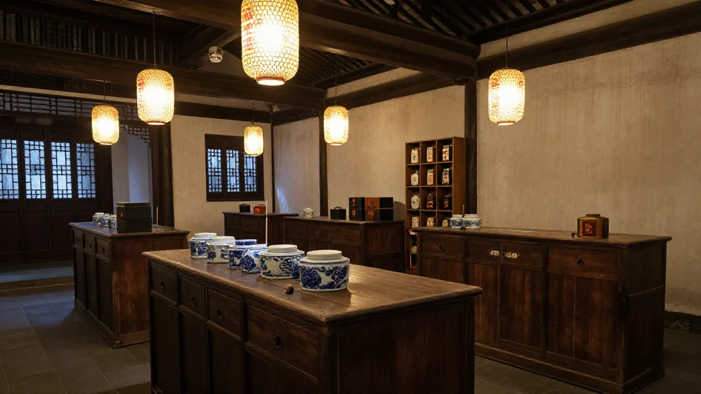

圖片由 AI輔助創作（Z-Image-Turbo）Image by AI (Z-Image-Turbo)
【鄭哥點評】
10月18日，中國新聞網廣州出咗一篇稿，題目叫《以廣交會為窗：中國外貿翻譯蝶變》。我睇完，坐咗一陣。
我做過翻譯，亦做咗26年外貿。翻譯喺外貿場合係咩位置，我清楚——佢唔係配角，佢係張入場券。冇佢，你連開口嘅資格都冇。
呢篇稿講嘅，係一張入場券點樣由一本小冊子，變成一副40克嘅眼鏡。中間三次躍遷，每一次都同中國外貿嘅體量一齊跳。
第一幕：清代十三行，「廣州英語」同《鬼話》

圖片由 AI輔助創作（Z-Image-Turbo）Image by AI (Z-Image-Turbo)
清代一口通商，廣州係全國唯一對外通商口岸，十三行就係全球貿易樞紐。
當時冇標準商務英語。廣州商人自己摸出一套：用粵語注音、簡化語法、唔求文雅、只求能用。呢套嘢，人叫「廣州英語」。
「你想買咩」，講成 "What thing wantchee"。民間仲編咗本小冊子，叫《鬼話》——字淺、句直，翻開就用得。
呢套土辦法，係近代中國最早嘅外貿溝通體系，亦都真係撐起咗清代最繁忙嗰條商貿通道。
我做外貿咁多年，最怕聽到一句話：「我英文唔好，做唔到外貿。」清朝人冇教材、冇考試、冇語音班、冇AI，佢照樣做到。工具醜，生意照做。
第二幕：1957年之後，由統一配翻譯到「舉牌翻譯族」
圖片由 AI輔助創作（Z-Image-Turbo）Image by AI (Z-Image-Turbo)
1957年，廣交會創辦。涉外交流資源稀缺，由首屆開始，就統一配備專職翻譯。
八十年代改革開放，外貿活力釋放，越嚟越多業務員自學外語，自己兼任翻譯。
九十年代係展館最旺嘅年代。外商客流激增，展館外面出現一班人：手舉牌子，寫住自己識嘅語種同水平，等客商嚟揀。人叫佢哋「舉牌翻譯族」。
廣外2002級校友黃先生咁樣回憶：「一群年輕大學生，黑壓壓，白花花，盯著柵欄外來回踱步的參展商，等待著客商的挑揀。大家清一色手舉牌子，展示自己的語種和水平……」
呢段說話我睇咗兩次。第一次睇到熱鬧，第二次睇到議價權。黑壓壓、白花花，係人；「等待客商挑揀」，係價錢由邊個定。當年翻譯企喺柵欄外面，價錢就係企喺柵欄外面嘅人定嘅。
第三幕：今日，翻譯唔再企喺柵欄外面
圖片由 AI輔助創作（Z-Image-Turbo）Image by AI (Z-Image-Turbo)
今年廣交會，翻譯入咗展館，坐喺展位上。
人形機械人「小智」，支持八十幾種語言，喺展廳現場做中英文切換。
AI雙屏翻譯機：工作人員講中文，機器直接輸出採購商嘅母語。報道嘅原話係「過程不用等、不用遞設備，可以直接和對方對話」。
科大訊飛嘅AI翻譯眼鏡：字幕直接投射喺鏡片，重量40克，支持122種語言實時翻譯。有個巴西採購商戴上，即刻用母語同工作人員傾，仲話想將呢種穿戴設備帶返自己國家賣。
40克。我以前帶翻譯出差，翻譯要食飯、要住、要機票，仲會有情緒。而家40克，122種語言，唔使請假。
第四幕：我睇到嘅三層
圖片由 AI輔助創作（Z-Image-Turbo）Image by AI (Z-Image-Turbo)
第一層：工具一直變，價值邏輯冇變。
由《鬼話》到AI眼鏡，每一代工具解決嘅都係同一件事：降低跨語言溝通成本。手工業時代靠人腦記，工業時代靠人力市場，智能時代靠算法。變嘅係解法，唔係問題。
第二層：AI翻譯解決嘅唔係語言問題，係自信心問題。
好多中小外貿業務員，英文唔係唔夠好，係唔敢開口。開口呢一步，門檻最高。AI翻譯將呢個門檻拆低：講錯咗，機器幫你兜；講得慢，冇人笑你。更多普通人可以入場，唔使先請一個翻譯做中介。
呢件事對中國外貿嘅影響，唔係「慳返幾千蚊人工」，係從業人數嘅基數變大。基數一變大，樣樣都唔同。
第三層：翻譯工具係出海能力嘅溫度計。
由「廣州英語」走到「122種語言實時翻譯」，中間隔住一百幾十年。呢一百幾十年，中國外貿由十三行一條街，變成全球最大嘅貨物貿易國。工具係被體量逼出嚟嘅：你做到幾大生意，就會有幾好嘅工具送上門。
反過來講，如果你今日仲要靠「識英文」嚟收錢，要小心。工具每一代都會拆走一種中介費，下一種可能就係你收緊嗰種。
一句話總結
翻譯工具每變細一次，中國外貿就變大一次。由一本《鬼話》，到一副40克嘅眼鏡，中國人同世界講嘢嘅方式，由「學你點講」變成「用我嘅話講，你聽得明」。
資料來源：中國新聞網（廣州）《以廣交會為窗：中國外貿翻譯蝶變》，2026年10月18日。本文只引用該報道公開陳述的事實（黃先生回憶、小智／雙屏翻譯機／訊飛AI翻譯眼鏡嘅公開參數），其餘為鄭哥的個人觀察。
圖片由 AI輔助創作（Z-Image-Turbo）Image by AI (Z-Image-Turbo)
[Zheng Ge's Take]
On 18 October, China News Service in Guangzhou ran a piece titled "The Canton Fair as a Window: The Transformation of China's Trade Interpreting". I read it and then sat for a while without doing anything.
I have worked as an interpreter, and I have been in export for twenty-six years. I know exactly where an interpreter stands in a trade deal. Not a supporting part — the ticket in. Without it you are not even allowed to open your mouth.
The article is about how that ticket went from a thin booklet to a pair of forty-gram glasses. Three leaps, and every one of them jumped at the same time as the size of China's export business.
Act One: the Thirteen Factories, Canton English, and a booklet called Ghost Talk
圖片由 AI輔助創作（Z-Image-Turbo）Image by AI (Z-Image-Turbo)
In the Qing single-port era, Guangzhou was the only port open to foreign trade, and the Thirteen Factories were the hub of world commerce.
There was no standard business English. The Guangzhou merchants worked one out themselves: Cantonese sounds for the pronunciation, grammar stripped to the bone, no elegance required, only usability. People called it Canton English.
"What do you want" came out as "What thing wantchee". Someone put a small booklet together called Gui Hua — Ghost Talk: plain characters, direct sentences, open it and use it.
That crude method was the earliest trade communication system in modern China, and it genuinely carried the busiest commercial route of the Qing period.
After all these years in export, the sentence I dread most is: "My English is not good enough, I cannot do export." The Qing merchants had no textbooks, no exams, no pronunciation classes and no AI, and they did it anyway. An ugly tool still closes the deal.
Act Two: after 1957, from assigned interpreters to the sign-holding crowd
圖片由 AI輔助創作（Z-Image-Turbo）Image by AI (Z-Image-Turbo)
In 1957 the Canton Fair was founded. Foreign-facing staff were scarce, so from the very first session the fair assigned professional interpreters as standard.
In the 1980s reform and opening released the energy in export. More and more salespeople taught themselves a language and doubled as the interpreter.
The 1990s were the crowded years. Foreign buyer traffic surged, and outside the halls a crowd appeared holding up signs listing the languages they spoke and how good they were, waiting to be picked. People called them the sign-holding interpreters.
Mr Huang, a graduate of Guangdong University of Foreign Studies, class of 2002, remembers it like this: "A crowd of young university students, black hair, white shirts, staring at the exhibitors pacing back and forth outside the fence, waiting to be chosen. Every one of us holding up a sign, showing our languages and our level…"
I read that twice. The first time I saw the bustle. The second time I saw who held the pricing power. Black hair and white shirts are the people; "waiting to be chosen" is who sets the price. Back then the interpreter stood outside the fence, and the price was set by whoever stood outside the fence.
Act Three: today the interpreter is no longer outside the fence
圖片由 AI輔助創作（Z-Image-Turbo）Image by AI (Z-Image-Turbo)
This year the interpreter moved inside the hall and took a seat at the booth.
A humanoid robot called Xiao Zhi handles more than eighty languages and switches between Chinese and English on the spot in the exhibition hall.
A dual-screen AI interpreter: the staff member speaks Chinese, and the machine puts out the buyer's mother tongue directly. The report quotes it as "no waiting, no passing a device back and forth, you can talk to each other directly".
Then iFlytek's AI translation glasses: the subtitles are projected onto the lens itself, the whole thing weighs forty grams, and it translates 122 languages live. A Brazilian buyer put one on, immediately talked with the staff in Portuguese, and said he wanted to take this kind of wearable back to his own country to sell.
Forty grams. In the old days I travelled with an interpreter. The interpreter needed meals, a room, a plane ticket, and had moods. Now: forty grams, 122 languages, and it never asks for leave.
Act Four: three layers of what I saw
圖片由 AI輔助創作（Z-Image-Turbo）Image by AI (Z-Image-Turbo)
Layer one: the tool keeps changing, the logic of value does not.
From Ghost Talk to AI glasses, every generation of tool solves the same problem: cut the cost of communicating across languages. The craft era used human memory, the industrial era used a labour market, the intelligent era uses algorithms. What changes is the method, never the problem.
Layer two: AI translation does not solve a language problem. It solves a confidence problem.
Plenty of small and mid-sized export salespeople do not have bad English. They are afraid to open their mouths. Opening your mouth is the highest step of all. AI translation flattens that step: say it wrong and the machine covers for you; say it slowly and nobody laughs. More ordinary people can now walk in without hiring an interpreter as a middleman first.
The effect on China's export business is not "a few thousand yuan of wages saved". It is a bigger base of people doing the work. Once the base grows, everything else changes with it.
Layer three: the translation tool is a thermometer for export capability.
From Canton English to 122 languages in real time is a hundred and some years. In those hundred and some years China's export business went from one street of the Thirteen Factories to the largest goods trader in the world. The tool was pushed out by the volume: do business at a certain size and a tool of that quality turns up at your door.
Which cuts both ways. If your living still depends on "I speak English", be careful. Every generation of tool removes one kind of middleman fee, and the next one it removes might be the one you are charging.
In One Line
Every time the translation tool got smaller, China's export business got bigger. From one booklet called Ghost Talk to a forty-gram pair of glasses, the way Chinese people talk to the world has moved from "teach me how you say it" to "I will say it my way, and you will understand me".
Source: China News Service (Guangzhou), "The Canton Fair as a Window: The Transformation of China's Trade Interpreting", 18 October 2026. Only the facts stated publicly in that report are used here (Mr Huang's recollection and the published specifications of Xiao Zhi, the dual-screen interpreter and the iFlytek AI glasses). Everything else is Hany's own observation.